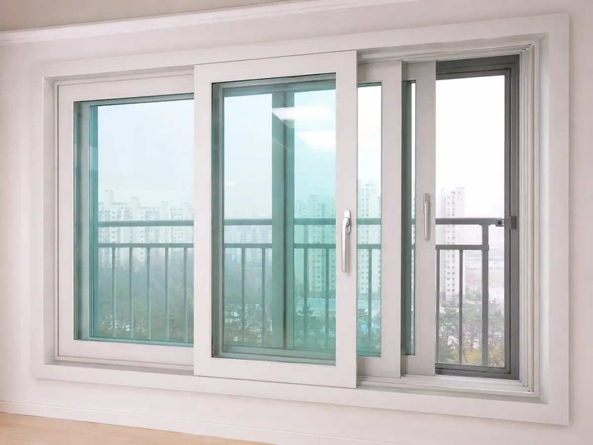
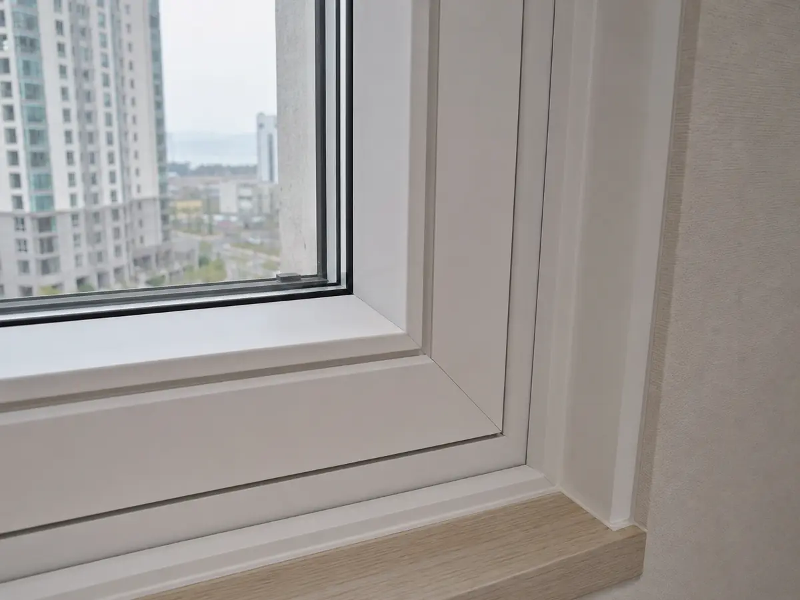

창호 (샷시)
한 줄 결론
창호는 ‘단열 + 기밀 + 수밀 + 차음’의 4축. 등급(KS·에너지효율)을 견적서에 반드시 명시하세요.
종류별 비교
일반 PVC 창호
아파트 표준
15~25만원/㎡ (자재+시공)
합리적 가격, 시공 보편
기밀성 한계 (슬라이딩 특성)
시스템 창호
고단열·고기밀
35~60만원/㎡ (자재+시공)
최고 수준 단열·기밀, 결로 거의 없음
단가↑, 보수 부품 의존
알루미늄·하이브리드
발코니·내창
10~20만원/㎡
슬림 디자인, 내구·녹슬지 않음
단열성↓ (외창 단독 ✕)
예시 사진 (창호 비교)
사진은 README 경로에 업로드하면 자동 노출됩니다.



단열·기밀 등급의 의미
에너지효율 1등급
Uw(열관류율) 약 0.8~1.2 W/㎡K. 시스템 창호 수준
에너지효율 3등급
Uw 약 1.5~1.8. 일반 PVC 슬라이딩 보급형
기밀성
1~5등급. 1등급이 가장 우수. 슬라이딩은 본질적으로 3등급 한계
차음성
26~37dB. 큰길가는 35dB+ 필요
평형별 표준 비용
발코니 미확장 24평 기준 (외창 + 분합문). 시점·브랜드·창 개수에 따라 변동.
| 평형 | 일반 PVC | 시스템 창호 |
|---|---|---|
| 24평 | 500~800만원 | 1,200~1,800만원 |
| 34평 | 800~1,200만원 | 1,800~2,800만원 |
| 45평+ | 1,200~1,800만원 | 2,500~4,000만원 |
창호 교체 시 체크리스트
- 관리실 신고 — 외관 변경 시 조합·관리실 사전 동의
- 이웃 양해 — 안전망·소음·반출입 일정
- 치수 실측 — 견적 전 반드시 현장 실측
- 창호 브랜드 — LX(지인), 한화 L&C, 이건, KCC 등. 동일 브랜드라도 시리즈별 등급 다름
- 방충망 — 미세방충망 vs 일반. 포함 여부 확인
- 외부 마감 — 외부 벽 보강·실리콘 마감 포함 여부
- 하자 보증 — 창호·시공 5년 (건설산업기본법)
결로·소음 대응
i
결로의 80%는 환기 부족, 20%는 단열 성능.
창호를 바꿔도 환기를 안 하면 결로가 다시 생깁니다.
- 결로 — 시스템 창호 + 1일 2~3회 5분 환기로 거의 해소
- 외부 소음 — 차음 35dB+ 또는 이중창 시공
- 틈새 소음 — 기밀성 1~2등급 + 가스켓 상태
출처
- KS F 3117 (창세트의 성능·열관류율)
- 에너지소비효율등급제 (창세트, 산업통상자원부)
- 건설산업기본법 시행령 별표4 (창호 하자담보 5년)
⚠
면책 가격·사양은 시장 관행 기반 참고용입니다.